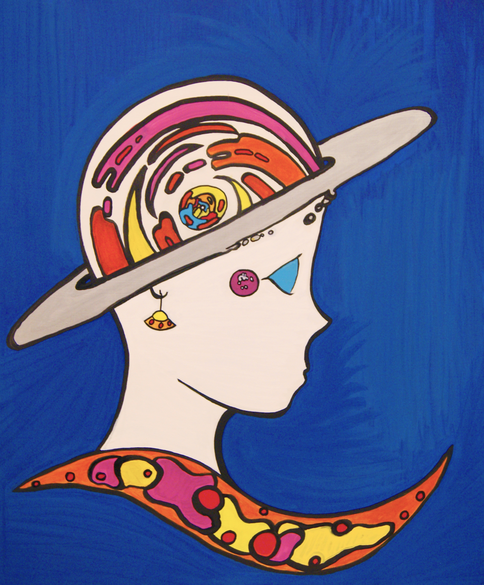

Space Lady
This piece was my final project for the Honors Portfolio class I took in my Junior year of high school. The project wanted us to take inspiration from an artist either borrowing elements that compliment our own styles or working with elements that do not as a way to challenge ourselves.
Similar to Peter Max I also enjoy using bright colors, and using space as a theme in my work, so he seemed like the ovbious choice.
Borrowing from a series of sketches I had been working on previously I used my "space lady" theme and brought one of my characters into the piece. While none of the other sketches made it into pieces this final piece seemed like a kind of resolution or bookend to my own series, which gave this piece much more personal meaning.
To identify this piece as more Peter Max- inspired I didn't use a dynamic angle for the portrait of the woman, instead I opted to take a side portrait angle and simplify the silhouette to keep the shapes very iconic and generic like Peter Max. I also attempted to use shapes in the same way he did, most evidently in the Woman's hat and in the design beneath her neck where I tried to keep the shapes within the same language.
One of the struggles I had in making this piece was getting a flat color, which is very evident in the marks made in the blue background. I struggled a lot with the shapes under her neck and on her hat as well, since it became very hard to cover up any mistakes with thin acrylic or with the wet graffiti markers. The pink design next to the Woman's eye was also a result of this, after botching a flat paint and spilling some pink I did my best to cover it up by adding the design, but I had not intended for it to be there initially.
For as many mistakes as there are, I still really enjoy the piece, and I wouldn't dare touch it again at this point.
A lot of me does want to do a newer, fresher piece and re-do this one to show improvement and remedy the work, but touching this one or trying to do it in the same way would almost feel like a violation to me.
This piece was my final project, bookending my work in the class and also a six- month sketch series I had been working on, and I wouldn't want to interfere with the ending. It's a piece I can now look back on and pick on for poor execution or a lack of proporiton but that also resonates with a lot of what I have managed to accomplish, which leaves me feeling good not only about the piece but my own skills as well at the end of the day.